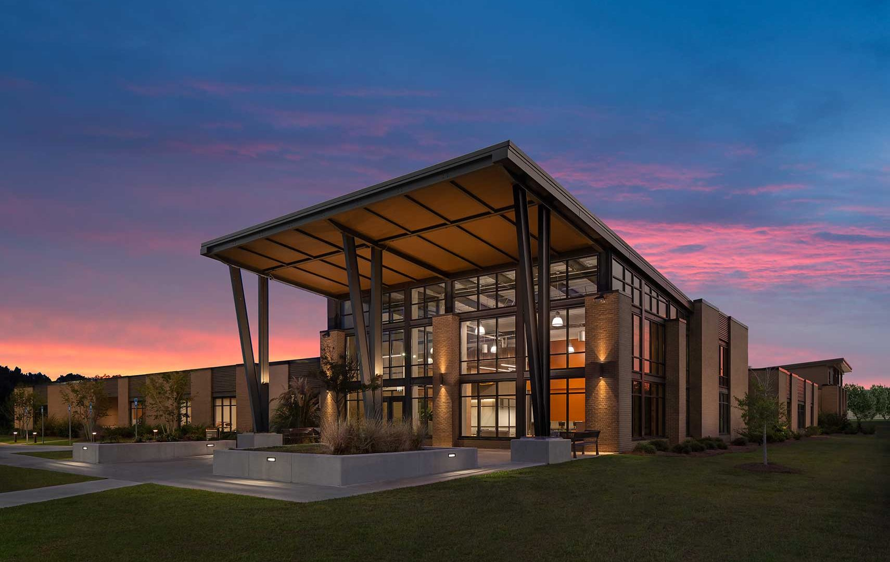

LEED Registered
Ogeechee Tech College
Located in Statesboro, Georgia, the Biological Sciences Building at Ogeechee Technical College began as a LEED project but reverted to the Georgia Peach Rating System.
The project included high performance features and RBGB shifted from managing the LEED process to managing the Peach process.
The project achieved two Peaches and was the first Peach Certified project in the state.
We were in constant dialog with the state administration arm for the Peach program, provided feedback for the nascent rating system, worked closely with all project team members, and managed all documentation submittals.
